This is a quick analysis of A vs. I graphs for some of the software used
in Dependency Finder. I took these graphs from
Design Principles and Design Patterns
by Robert C. Martin of Object Mentor, Inc. The idea is to plot the degree
of abstractness of a package against how hard it is to change that package.
The X-axis charts instability, or a package's coupling. Low values
mean that many other packages use the package and are sensitive to change;
making changes will be hard. The Y-axis charts abstractness, or its
ratio of interfaces/abstract classes to concrete classes. Low values mean
that there is very little abstraction. You want to group interfaces in
abstract package that control access to a component. They are the ones that
everybody refers to. A=1 and I=0. Then each
component has implementation packages hidden behind the interface package.
Nobody should refer to them. A=0 and I=1.
In real life, packages are somewhere in between, hopefully on a straight
line between the two extremes. Robert C. Martin calls this line the main
sequence, in reference to astronomy, and D' is the normalized
distance of a given package from the main sequence. I can easily compute
D' = A + I - 1. A low value means that the package is too
concrete and subject to change for the number of external references to it.
A high value means that the package is highly abstract but not much used.
I collected the values for D' using OOMetrics
with the Martin configuration. I then used a special XSL stylesheet to extract
the values from the XML output and fed them to MS Excel. I used a simple Perl
script to compute the value distributions. It rounded each value of
D' to the nearest 0.1 increment and then couunted how many points
fell on each of the 21 target values. I normalized the values by dividing each
count by the total number of packages in a given piece of software so that we
can compare the distributions regardless of the size of the software under
inspection.
E.g.,
OOMetrics -configuration etc\MartinConfig.xml -cvs -group -out depfind lib\DependencyFinder.jar OOMetrics -configuration etc\MartinConfig.xml -xml -group -out depfind lib\DependencyFinder.jar OOMetrics -configuration etc\MartinConfig.xml -cvs -group -out oro lib\jakarta-oro.jar OOMetrics -configuration etc\MartinConfig.xml -xml -group -out oro lib\jakarta-oro.jar OOMetrics -configuration etc\MartinConfig.xml -cvs -group -out log4j lib\log4j.jar OOMetrics -configuration etc\MartinConfig.xml -xml -group -out log4j lib\log4j.jar OOMetrics -configuration etc\MartinConfig.xml -cvs -group -out xerces lib\xmlParserAPIs.jar lib\xercesImpl.jar OOMetrics -configuration etc\MartinConfig.xml -xml -group -out xerces lib\xmlParserAPIs.jar lib\xercesImpl.jar OOMetrics -configuration etc\MartinConfig.xml -cvs -group -out xalan lib\xml-apis.jar lib\xalan.jar OOMetrics -configuration etc\MartinConfig.xml -xml -group -out xalan lib\xml-apis.jar lib\xalan.jar
The graphs below on the left show the A vs. I plottings. The center graphs
show the values of D' in sorted order. The graphs on the right
show the distribution of values of D' across the range -1 to 1.
| A vs. I Graph | D' | Distribution of D' | |
| Dependency Finder | 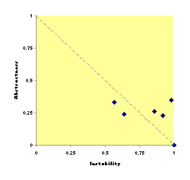 | 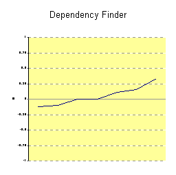 | 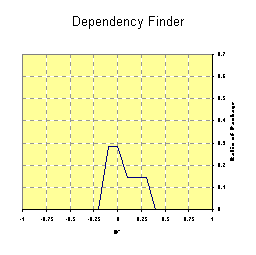 |
| Jakarta-ORO | 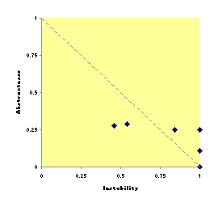 | 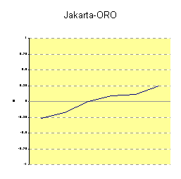 | 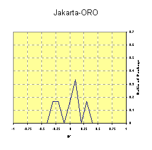 |
| Log4J | |
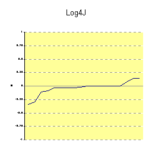 | 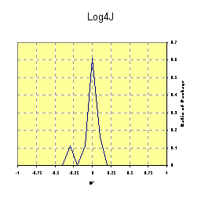 |
| Xerces | |
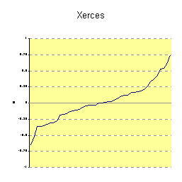 | 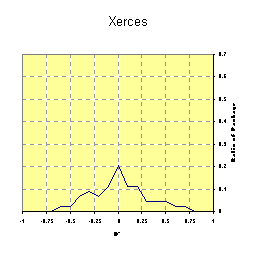 |
| Xalan | |
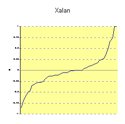 | 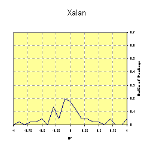 |
The goal, here, is to keep the packages close to the main sequence and keep
values of D' as close to zero as possible. So from the center
graphs, this means keeping the extreme values close to the central axis, like
Jakarta-ORO and Log4J. This will translates into a large spike at 0, and short
wings to each side, on the distribution graphs, again like Jakarta-ORO and Log4J.
Finally, here is a summary view of all five codebases. The thin line shows
the full range of D' for that codebase. The large while square is
centered on the statistical mean and spreads each way by one standard deviation.
Statistically, about 65% of all values fall within the square. The column below
each range shows how many packages are in each codebase.

Final lesson: I guess Dependency Finder is not faring too badly, but for something so small, it could still have done better. :-)